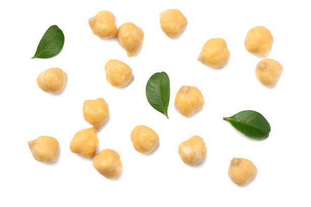
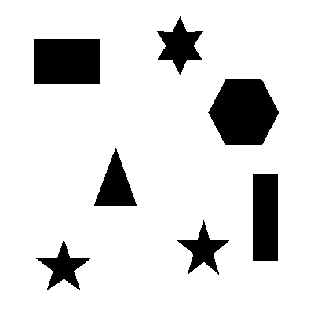

Le but de ce projet est d’analyser une image pour repérer automatiquement les objets qui s’y trouvent et les compter, même lorsque certains sont collés ou partiellement superposés.
Le programme part d’une image en couleur, détermine la couleur dominante du fond, puis explore les autres zones pour y détecter les objets à l’aide d’un algorithme inspiré de la programmation dynamique. Chaque zone détectée est traitée et comptée individuellement.
 